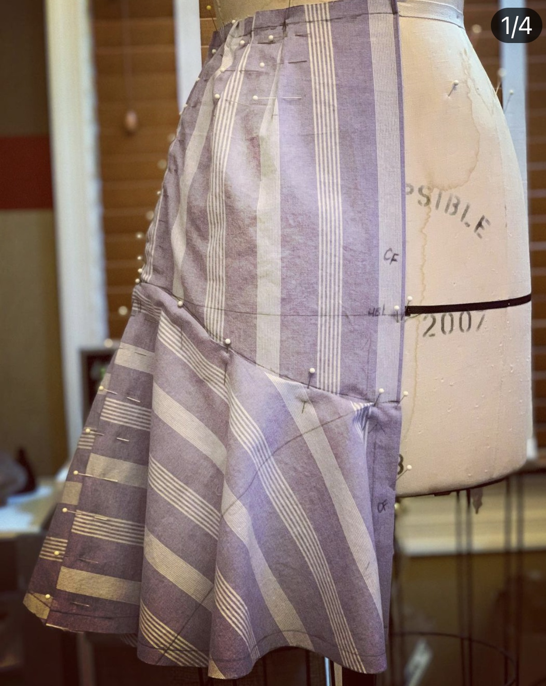

What are you working on for your senior year at SCAD?
I'm designing my senior collection.
And what is a senior collection?
We have to design 5 looks. The first semester is designing the patterns.
The second is using the patterns to create our looks out of muslin or practice fabric.

The third is spent putting together our looks with our actual fabric.
WOW THAT LOOKS AWESOME!
And what is your concept for your collection?
I’m designing clothes specifically for people with Type 1 diabetes. I’m calling it Type One of a Kind!
And how did you come up with this concept?
Well, I have Type 1 diabetes and I have a lot of trouble wearing clothes I want to wear because there is nowhere to put my insulin pump. For example, I can't wear body cons or slip dresses because there isn’t anywhere to put it, or it's
bulging and ruins my look.
Wow, that must be really frustrating!
Yeah it is!
So what are you doing differently than other clothing brands do? What designs make your clothes specific for people with T1D?
My collection includes clothes that can accommodate insulin pumps and injection sites. I design my clothes with more pockets, hidden pockets, or other aspects like ruffles that can hide the bulge of an insulin pump. I’m also incorporating
cut outs in places where people might use injections like in the arms or stomach. I want people to be able to wear what they want and feel amazing without sacrificing what they want to wear because they have diabetes.
Wow, that's amazing! So can people without diabetes wear these clothes?
Of course! Anyone can wear these clothes, I’m just also accommodating people with diabetes.